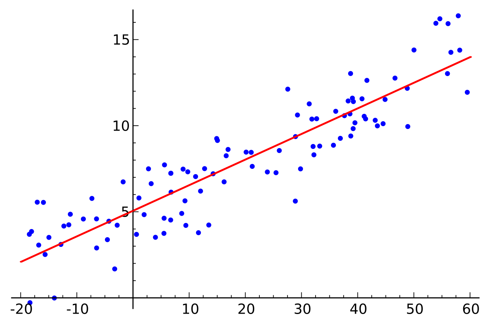

1. Linear Regression
Linear regression is used for modeling the linear relationship between the input variables and the corresponding output variables. After that, with the trained model and an arbitrary input value, we can predict or forecast an approximation output value.
For a simple case in 2D, the modeling process is to find parameters \(m\) and \(b\) so that the below equation is satisfied.
\[y=mx + b\]

Cost Function
In order to find the best values for \(m\) and \(b\), we choose Mean Square Error (MSE) function as a cost function and minimize this cost function help us find these parameter values.
\[minimize \frac{1}{N} \sum_{i=1}^N (y_i^{'} - y_i)^2\]
\[J=\frac{1}{N} \sum_{i=1}^N (y_i^{'} - y_i)^2\]
For linear regression, the MSE is a convex function, therefore it's guaranteed to find a global minima.
Gradient Descent
Gradient descent is an iteration way used for adjusting parameter values to make the cost function converge to minima.
By taking the partial derivatices with respect to \(m\) and \(b\)
\[J=\frac{1}{N} \sum_{i=1}^N (y_i^{'} - y_i)^2 =\frac{1}{N} \sum_{i=1}^N (mx_i + b - y_i)^2 \]
\[\frac{\delta J}{\delta m} = \frac{2}{N} \sum_{i=1}^N (mx_i + b - y_i) \cdot x_i = \frac{2}{N} \sum_{i=1}^N (y_i^{'} - y_i) \cdot x_i\]
\[\frac{\delta J}{\delta b} = \frac{2}{N} \sum_{i=1}^N (mx_i + b - y_i) = \frac{2}{N} \sum_{i=1}^N (y_i^{'} - y_i)\]
The learning function is defined as
\[m \leftarrow m - \alpha \cdot \frac{\delta J}{\delta m} = m - \alpha \cdot \frac{2}{N} \sum_{i=1}^N (y_i^{'} - y_i) \cdot x_i\]
\[b \leftarrow b - \alpha \cdot \frac{\delta J}{\delta b} = b - \alpha \cdot \frac{2}{N} \sum_{i=1}^N (y_i^{'} - y_i) \]
Where \(a\) is the learning rate. A smaller learning rate helps us get closer to minima but it's slow, a larger learning rate can make cost function converge to the minima faster but it can lead to overshoot.

*) To avoid bias (the larger range feature gives more impaction to result) or overflow while calculating, the train data should be normalized or standardized into the same range before training
Normalization: \(z = \frac{x - x_{min}}{x_{max} - x_{min}}\)
Standardization: \(z = \frac{x - \mu}{\sigma}\)
2. Experiment
Demo video
3. References